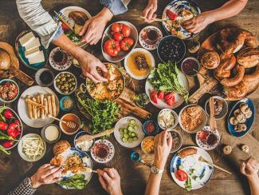

Odin Recipes

About
For as long as I can remember, I've been a foodie. Even before I had even heard of the word, I just LOVED being
able to try new foods from all different walks of life. Since I grew up in a very poor part of Texas and honestly thought i'd never get to leave, I figured it would be a good idea
to at least try to eat as many different types of food I could. My mom did her best to cook different types of food for us, but it wasn't until
we moved to San Diego that I was finally about to try authetic cuisines from different cultures. And let me tell you, I was HOOKED
Because of my love for cultural food, I eventually took on the task of trying to make them myself. While I am in no way claiming to make the best of the
best dishes, I would like to say I am pretty decent. Here are 3 of my favorite cultural dishes from around the world. I have included one side dish, one main dish and a dessert as I take you around the world!
Dongeurangddeng
Beef Birria
Puff Puff